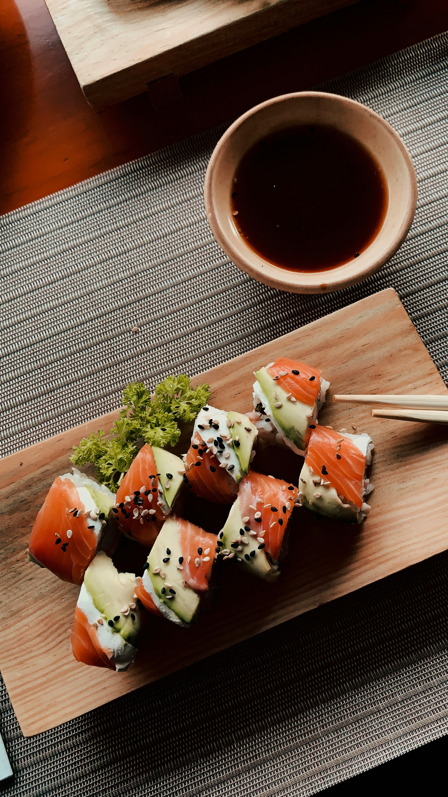

Odin Recipes
Sushi

Description
Ingredients
Some ingredients for this recipe include:
- Seaweed
- Rice
- Your favourite fillings (such as chicken, tuna, salmon)
- Sushi Roller
Steps
- Place down a bamboo mat and spread a plastic sheet over it.
- Place a sheet of seaweed on the plastic wrap.
- Add sushi rice to the seaweed.
- Add fillings in the center of the sushi rice
- Lift the mat and roll, shaping the ingredients into a tube and rolling with pressure.
- Roll until an inch of the sushi paper remains, then seal the edge with the rest of the roll.